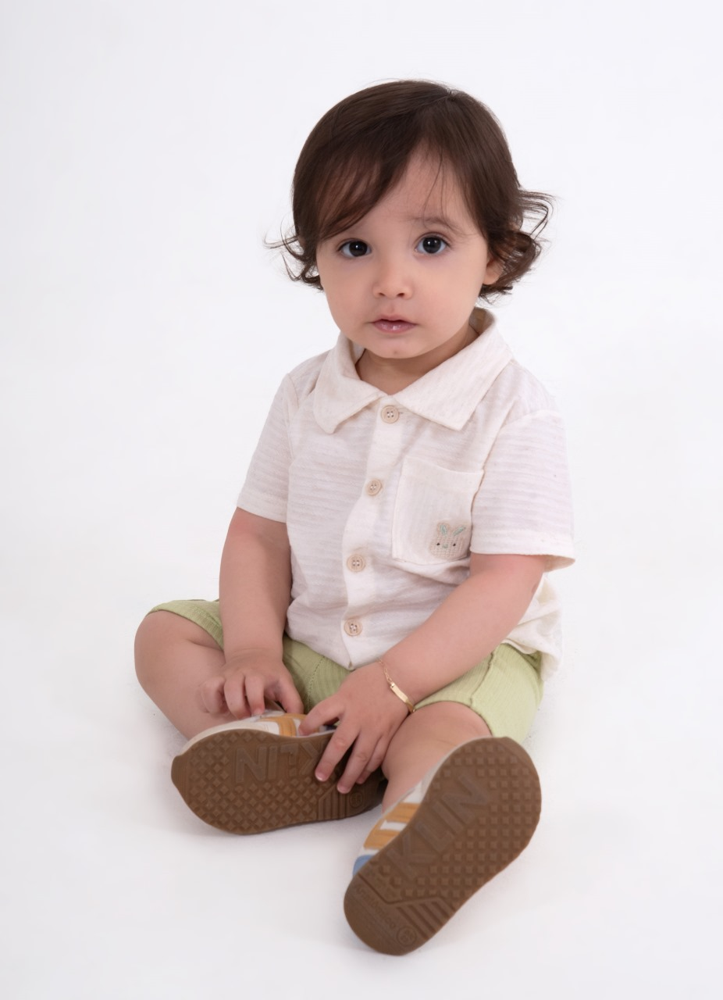
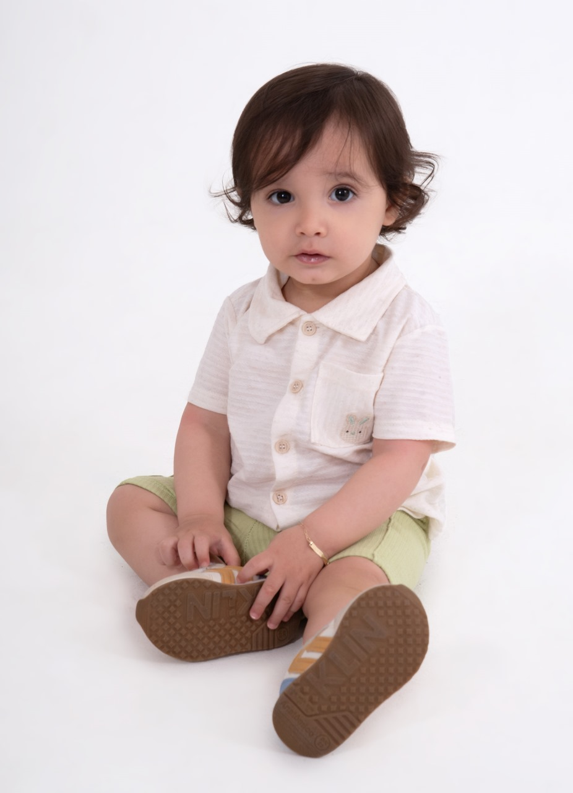

Sobre o Noah üåà

Noah é a prova viva de que o amor pode colorir o mundo.
Um bebê arco-íris que nasceu depois da tempestade, trazendo consigo a suavidade da paz e a alegria das novas manhãs.
Seu sorriso ilumina como o primeiro raio de sol, e seu olhar doce abraça corações sem dizer uma palavra.
Há nele um brilho que transforma qualquer lugar, enchendo o ar de ternura e esperança.
Por onde passa, Noah deixa um rastro de encanto — como um arco-íris que surge, inesperado, depois da chuva.
Quem é Noah Menezes Com apenas 1 aninho, Noah já encanta com seu sorriso, carisma e muito estilo. Seu perfil nasceu para inspirar famílias que buscam moda infantil moderna, confortável e cheia de personalidade. Cada publicação é planejada com cuidado para transmitir alegria, autenticidade e a essência da infância, transformando momentos simples em inspiração para outras famílias.


 
